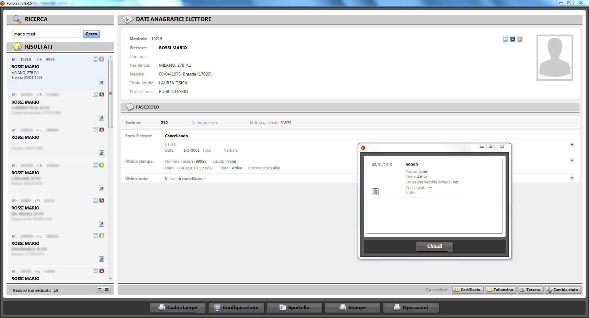

Pollon
 Pollon è una suite di strumenti per la gestione del bacino elettorale per una pubblica amministrazione. Costruito ad hoc sulla base delle leggi vigenti è in grado di gestire tutti i processi di competenza dell'ufficio elettorare di un comune. Sviluppato con le più recenti tecnologie Microsoft, ha un'interfaccia grafica gradevole e di facile utilizzo che permette la ricerca di un cittadino e la visualizzazione del suoi dati da elettore. Dall'interfaccia è possibile stampare tutti i certificati e le tessere elettorali che si ritengono necessarie. Inoltre la parte server si occupa di tenere allineati i dati con gli eventuali cambi apportati dall'ufficio anagrafe e quindi di poter gestire in modo automatico tutte le revisioni (ordinarie e straordinarie) con produzione della documentazione e dei verbali necessari.
Contattateci per una demo o per avere maggiori informazioni.